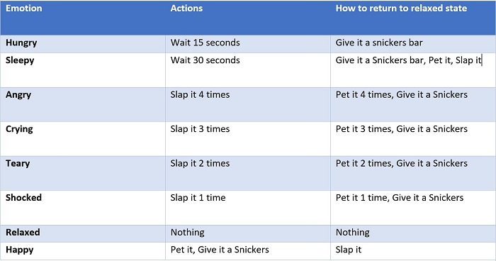
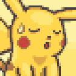
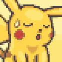
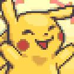
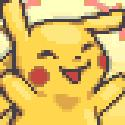

Your Pikachu Pet
Directions
Congrats, you have paid my virtual pet shop $2139.75 for your new virtual pikachu. Be careful its a weird one because it only eats snickers
To interact with pikachu you need to press "Start" but if you wait to long it might go to sleep on you or demand food. The other buttons shows the actions
you can do to your pikachu. There is also a "New Emotion" where you can force your pikachu to display a random emotion. Why you would use the option is my guess.
At the bottom of the site you will see all of the different emotion your pikachu displays and what they mean. Have fun and remember your pikachu's death is not a
valid reason to return the products. Simply because all sales are FINAL
This project uses variables to determine what state the pest is in. Actions can be repeated multiple times before to increase how happy or angry the pet is. But by doing so will cause it to be harder to return the pet to the relaxed state. For example, If you were to slap it 5 times for it to return to relaxed mode you will need to pet it 5 times. Refer to the chart to find all desriptions.
Chart that shows how to get to every emotion

 Your pikachu is hungry

Your pikachu is sleepy
Your pikachu is hungry

Your pikachu is sleepy
 Your pikachu is angry
Your pikachu is angry
 Your pikachu is crying
Your pikachu is crying
 Your pikachu is teary
Your pikachu is teary
 Your pikachu is shocked

Your pikachu is happy
Your pikachu is shocked

Your pikachu is happy
 Your pikachu is relaxed
Your pikachu is relaxed